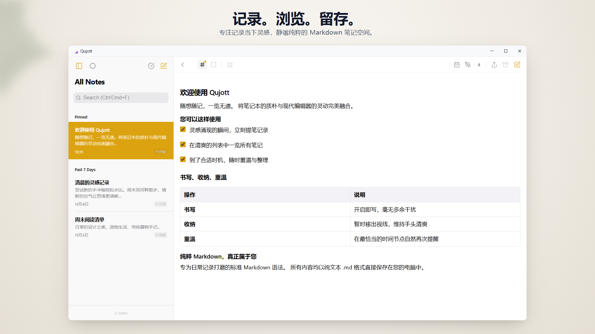
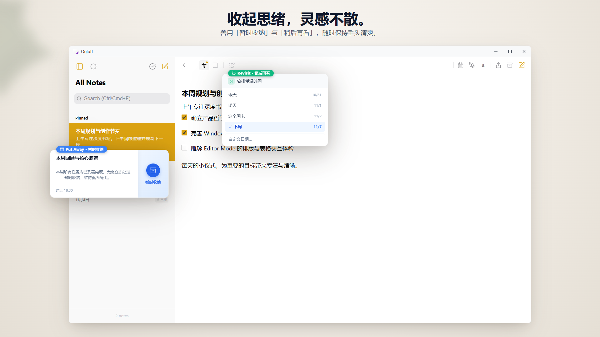
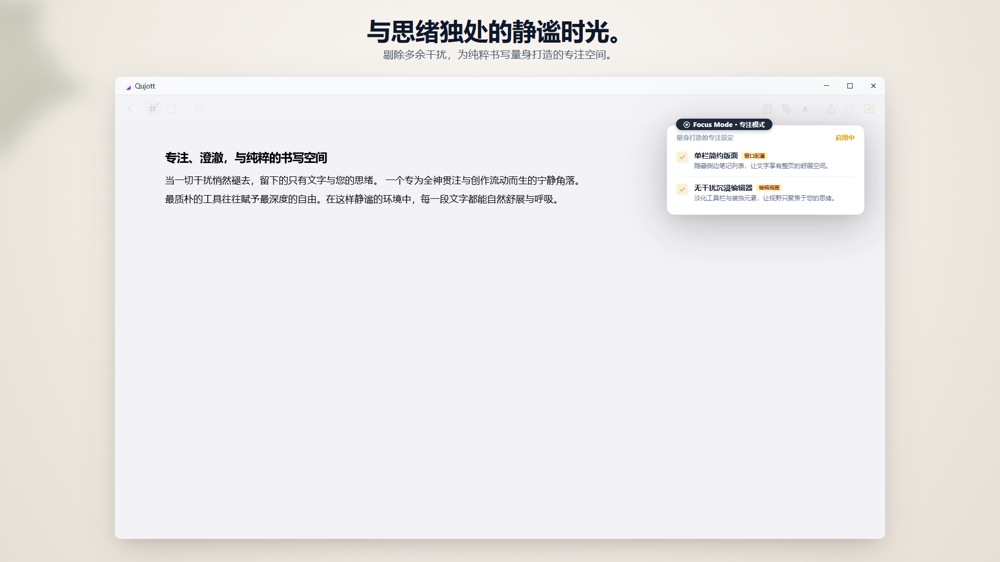
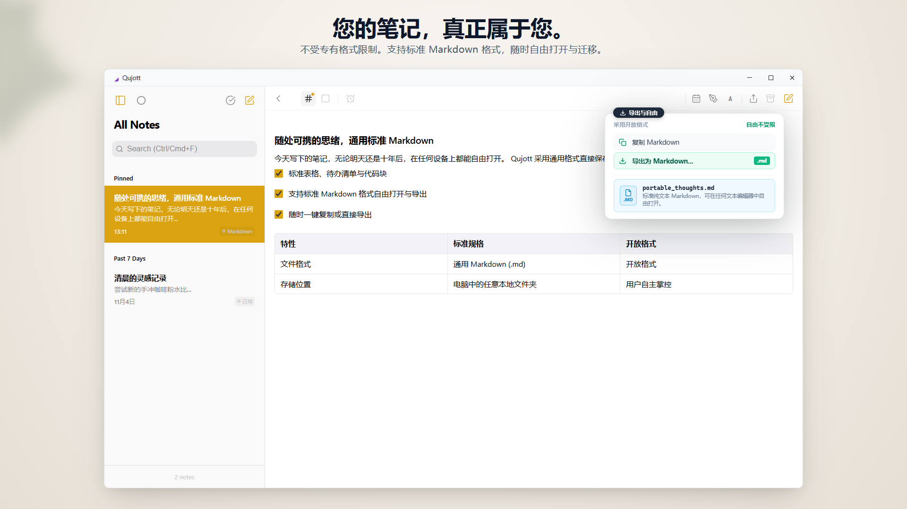
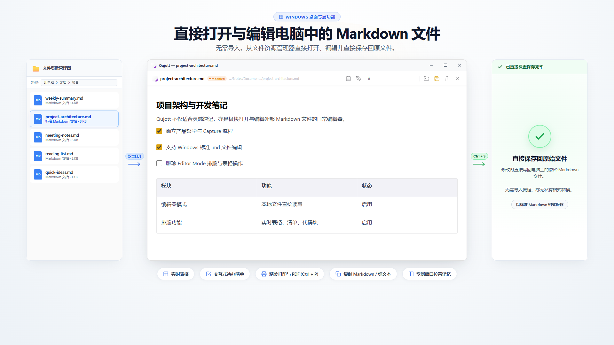
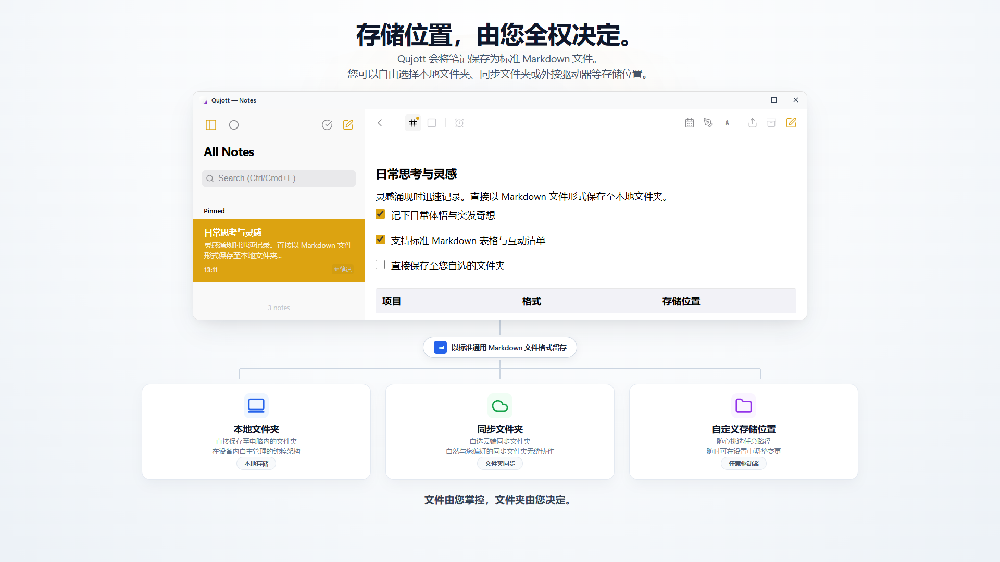
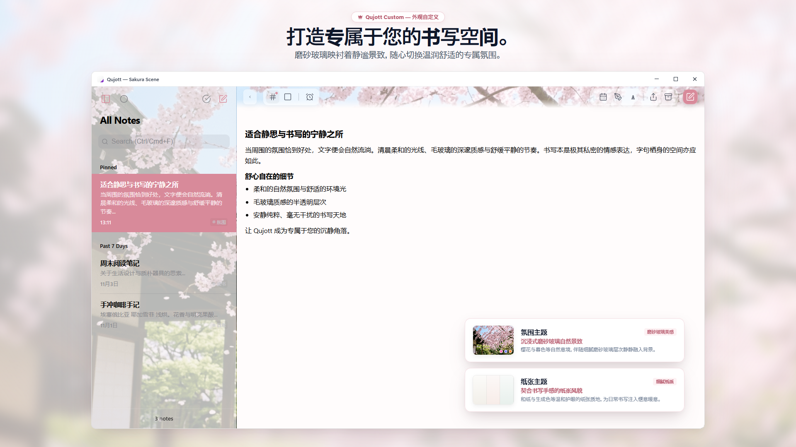

Qujott
灵感涌现的瞬间，轻松记下，
随时自在重温。
Qujott 结合了纸质便签本的随手好读与文本编辑器的自由灵活，是一款安静纯粹的轻量笔记本。
整理留给以后。先让思绪，常伴身旁。
支持标准通用 Markdown 格式。自由保存为纯文本文件，随心打开与编辑。

思绪与笔记清单自然并列，沉静简约的双栏空间
就像键盘旁的纸质便签本，随手即写。
Qujott 并非为了打造繁杂的任务清单或庞大的知识库而生。
它就像静置在键盘旁的纸质便签本，只专注于一件事：当灵感闪现的瞬间，动笔不再有任何犹豫与负担。
动笔前无需纠结文件夹分类，也不会强求你预先设置标签。
直接捕捉掠过脑海的字句并妥善安放身旁，往后重温浏览时再来轻松整理。
温柔移出视线，在最合适的时机自然相遇。
写完的笔记无需急着删除，使用“暂时收纳 (Put Away)”即可将其移出视线，保持手头工作空间清爽利落。
设定“稍后再看 (Revisit)”，笔记便会在今天、明天或下周等合适时机自然重回列表顶端。没有刺耳的闹铃催促，在最自然的节奏中与思绪重逢。

无需删除笔记，即可将其移出视线，保持手头工作空间清爽利落。在今天、明天或下周等合适时机，让笔记自然重回列表顶端。
彻底排除干扰，专注字里行间。
可隐藏侧边栏切换为单栏的“Focus 专注模式”。
去除所有多余的视觉元素，为您营建一处能完全静心梳理思绪、畅快书写的纯粹空间。

单栏极简布局与沉静克制的界面设计，减少视觉干扰，让您更专注于文字与思考。
让文字回归纯粹，由您自主管理。
在 Qujott 中记录的每一篇笔记均以通用标准的 Markdown（.md）文件保存。
不受专有格式限制（No lock-in）。随时可在文件资源管理器或兼容的文本编辑器中自由打开、编辑、导出与备份。

所有笔记均以通用标准的 Markdown 格式保存。随时可在文件资源管理器或兼容的文本编辑器中自由打开、编辑、导出与备份。
直接打开现有的 Markdown 文件进行编辑。
无需导入或转换格式，即可直接使用 Qujott 打开电脑中的 Markdown 文件，原地编辑并使用 Ctrl+S 直接保存回原文件。
日常亦可作为轻巧流畅的单文件 Markdown 编辑器随开随用。

直接在 Qujott 中打开并编辑电脑中的 Markdown 文件，使用 Ctrl+S 直接保存回原文件。无需任何导入流程或专有格式转换。
保存目录，由您自主选择。
将用户选择的文件夹设为 Qujott 的存储目录：无论是本地文件夹、现有的同步文件夹，还是外接驱动器。
无需注册或登录账号，笔记直接保存在您选择的文件夹中。

存储位置可在本地文件夹、同步文件夹、外接驱动器等之间自主选择。无需注册或登录账号，笔记直接保存在您选择的文件夹中。
将书写角落，打造成专属舒心天地。
通过磨砂玻璃景深效果与融入自然之美的氛围场景“Atmosphere Scenes（如樱花场景 Sakura）”及用纸主题，为每日书写时光营建赏心悦目的静谧美感（Qujott Pro 买断选项）。
更支持 80% 至 160% 的 UI 界面缩放调节，便于您依据不同的屏幕分辨率自由调整舒适的显示比例。

通过 Qujott Pro 提供的 Atmosphere Scenes 氛围场景（如樱花场景 Sakura）、用纸主题与磨砂玻璃景深效果，将每日书写角落打造成赏心悦目的专属天地。